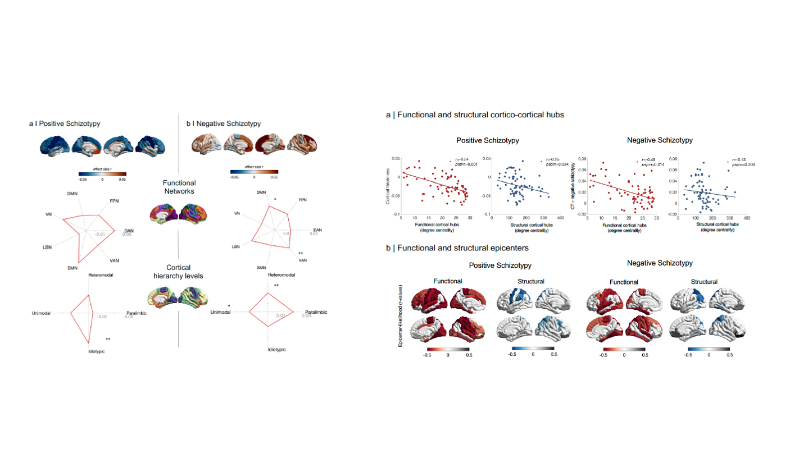
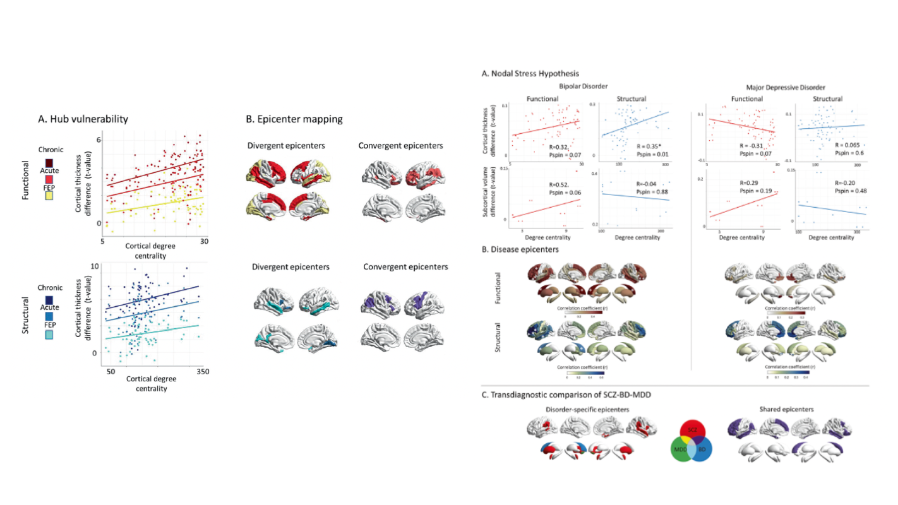
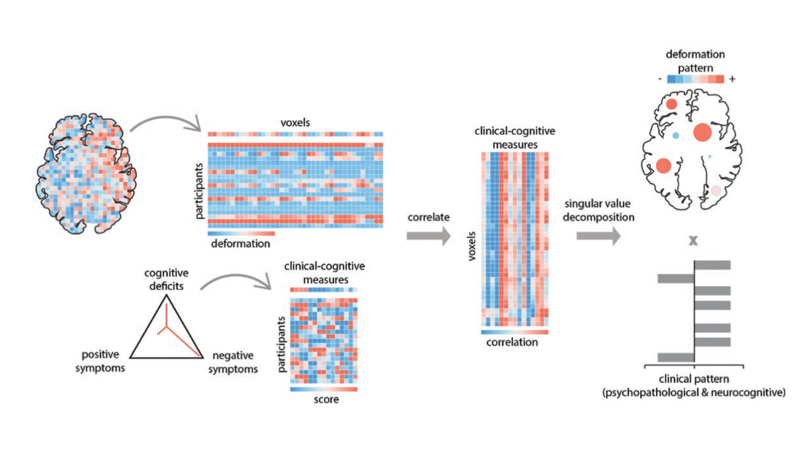
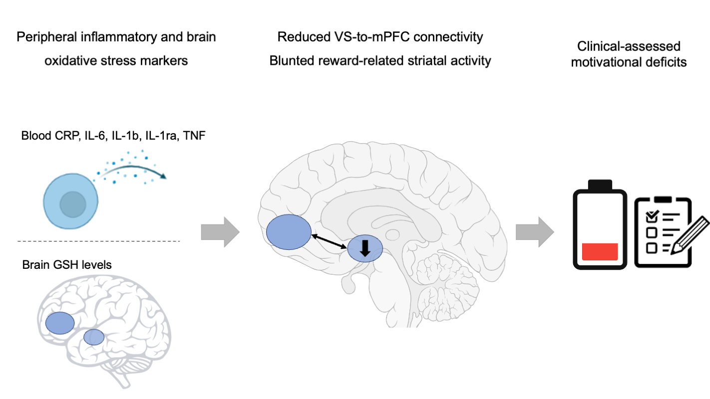
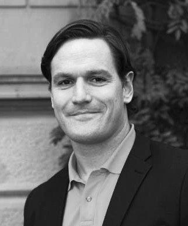

We are dedicated to advancing our understanding of psychosis and related disorders through a comprehensive and transdiagnostic approach that integrates clinical and behavioral data with advanced neuroimaging techniques. Our program aims to identify common and unique neurobiological underpinnings of these conditions to facilitate the development of personalized treatments, and inform public health policy.
We combine neuroimaging, multiscale and network analysis to better understand the neural substrates of clinical, behavioral, and genetic phenotypes in health and disease. Our principal research areas are schizophrenia and related disorders, as well as transdiagnostic investigations across the schizophrenia-affective disorders spectrum and substance use disorders. Our research centers around three themes:
Multiscale and network alteration in psychosis
Transdiagnostic and multimodal investigations of motivation and cognition
Translating neuroimaging into prevention and intervention
Collectively, our research aims to contribute to the development of precision psychiatry with treatment and prevention tailored to the individual needs and clinical characteristics of each patient.
Multiscale and network alteration in psychosis and related disorders.


We integrate clinical, genetic, and neuroimaging data to characterize individual variations in brain organization across the lifespan, including individuals at risk as well as those in the early and chronic stages of disease. Building on these findings, we aim to computationally identify potential cellular and molecular pathways underlying psychosis and related disorders.
Transdiagnostic and multimodal investigations of motivation and cognition.

To advance our understanding of motivational and cognitive deficits in neuropsychiatric conditions, we integrate biological (e.g., saliva, blood), behavioral, clinical, and imaging data in multimodal prospective studies.
Translating neuroimaging into prevention and intervention.

We seek to identify neuroimaging-based biomarkers for diagnostic, optimized treatment selection, and therapeutic development. Our goal is to contribute to the development of innovative prevention and treatment approaches informed by insights from neuroimaging and neuroscience to maintain and restore mental health.
Our Team
Interested in joining us for a short or longer while? Please get in touch with Matthias at matthiaskirschner@gmail.com.
Matthias Kirschner
Research Group Leader | MD
Matthias is head of the Biomarker Unit and Research and Education Platform of the Department of Psychiatry at Geneva University Hospitals. He is a board-certified psychiatrist and psychotherapist with training in cognitive behavioral and psychodynamic psychotherapy.

Janis Brakowski
Senior Research Fellow | MD
Janis is a senior research fellow based at the Psychiatric University Hospital in Zurich and a board-certified psychiatrist and psychotherapist with extensive training in cognitive behavioral and psychodynamic psychotherapy.
Xaver Berg
Senior Research Fellow | MD
Xaver is a senior research fellow based at the Psychiatric University Hospital in Zurich and a board-certified psychiatrist and psychotherapist with training in cognitive behavioral therapy.
Foivos Georgiadis
MD-PhD
Foivos is a resident in psychiatry and MD-PhD student in the lab of Prof. Philipp Homan at the University of Zurich. Foivos' research integrates brain imaging, genetics, and network neuroscience to study alterations in brain organization and individual variability in psychosis and related disorders.
Marlene Franz
Doctoral Student | MD
Marlene is a resident in psychiatry and a medical doctorate student studying transdiagnostic neural signatures of motivational deficits across schizophrenia and bipolar disorder.
Dominic Ho
Doctoral Student | MD
Dominic is a resident in psychiatry and a medical doctorate student studying brain circuit dysfunction in individuals with psychosis and comorbid substance use disorders.
Judith Kabbeck
Doctoral Student | MD
Judith is a resident in psychiatry and a medical doctorate student studying functional brain gradient alteration across psychiatric disorders including schizophrenia, bipolar disorder, and ADHD.
Collaborators
Stefan Kaiser, HUG, Geneva, Switzerland
Indrit Begue, University of Geneva, Switzerland
Philipp Homan, University of Zurich, Switzerland
Boris Bernhardt, MNI McGill, Montreal, Canada
Sofie Valk, MPI, Leipzig, Germany
Gemma Modinos, King's College, London, UK
Jessica Turnier, Ohio State, USA
Theo van Erp, UCI, USA
Carmen Sandi, EPFL, Lausanne, Switzerland
Lijing Xin, EPFL, Lausanne, Switzerland
Alain Dagher, MNI McGill, Montreal, Canada
Bratislav Misic, MNI McGill, Montreal, Canada
Paul Thompson and all members of the ENIGMA Consortium
Kirschner M*, Hodzic-Santor B*, ..., Modinos G. Cortical and subcortical neuroanatomical signatures of schizotypy in 3004 individuals assessed in a worldwide ENIGMA study. Mol Psychiatry 2022;27(2):1167-1176. doi: https://doi.org/10.1038/s41380-021-01359-9. *equal contribution
Kirschner M, Haugg A, Manoliu A, Simon JJ, Huys QJM, Seifritz E, Tobler PN*, Kaiser S*. Deficits in context-dependent adaptive coding in early psychosis and healthy individuals with schizotypal personality traits. Brain 2018;141:2806-2819. doi: https://doi.org/10.1093/brain/awy203. (Open access) *equal contribution.
Kirschner M, Sladky R, Haugg A, Stämpfli P, Jehli E, Hodel M, Engeli E, Hösli S, Baumgartner MR, Sulzer J, Huys QJM, Seifritz E, Quednow BB, Scharnowski F, Herdener M. Self-regulation of the dopaminergic reward circuit in cocaine users with mental imagery and neurofeedback. EBioMedicine 2018;37:489-498. doi: https://doi.org/10.1016/j.ebiom.2018.10.052 (Open access)
Kirschner M, Hager OM, Bischof M, Hartmann MN, Kluge A, Seifritz E, Tobler PN, Kaiser S. Ventral striatal hypoactivation is associated with apathy but not diminished expression in patients with schizophrenia. J Psychiatry Neurosci 2016;41:152–161. doi: https://doi.org/10.1503/jpn.140383. (Open access)